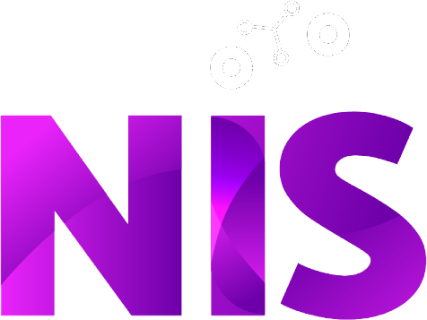

¿Y ahora qué hago con esto? · Ficha
Ficha · Seis preguntas para proyectos tecnológicos
Muy lindo el dashboard… ¿y ahora qué hago con esto?
Un pedido tecnológico no es necesariamente un diagnóstico del problema. Estas preguntas sirven antes, durante y después del desarrollo para encontrar lo que hay detrás del pedido y aumentar las chances de que la solución se use.

1
¿Qué problema intentamos resolver?
Intentá describirlo sin nombrar la herramienta que se pidió. Los pedidos suelen llegar en el idioma de la solución.
Ejemplo: “monitorear el programa” escondía dos problemas distintos: decidir cosas adentro y rendir cuentas a quien financia.
Alerta: el objetivo del proyecto es el nombre del producto.
2
¿Quién lo necesita y a quién afecta?
Pensá en quienes lo van a usar, en quienes toman decisiones y en las personas a las que les cambia el trabajo.
Ejemplo: el tablero dependía de datos que las referentes de cada espacio cargaban fuera de horario, y nadie lo había contado como trabajo.
Alerta: quien carga, usa o cambia su trabajo no estuvo en ninguna reunión.
3
¿Qué tendría que cambiar para decir que funcionó?
Buscá un resultado que se pueda observar. Entregar el software no demuestra que se haya resuelto el problema.
Ejemplo: no alcanza con “tener el tablero”. El resultado es que se llame a tiempo a las familias de quienes dejaron de venir.
Alerta: “funcionó” quiere decir “está entregado” o “la demo salió bien”.
4
¿Qué sabemos y qué estamos suponiendo?
Separá la evidencia de las hipótesis y de lo que todavía hay que investigar.
Ejemplo: suponer que los datos existen y se pueden usar, o que un número (como la asistencia) mide por sí solo si algo funciona.
Alerta: nadie vio los datos y ya hay mockups.
5
¿Qué pasa después de la entrega?
Mantenimiento, responsables, recursos, uso y evaluación. ¿Cuándo se mira, quién lo abre y qué hace con lo que ve?
Ejemplo: en vez de inventar un ritual nuevo, mirarlo diez minutos en una reunión mensual que ya existe.
Alerta: quien lo mantiene es un nombre propio, no un rol.
+
¿A quién nos falta preguntarle?
Esta pregunta atraviesa a todas las demás. Distintos conocimientos ven partes distintas del problema.
No siempre hace falta un equipo interdisciplinario completo. A veces alcanza con media hora con quien carga los datos o una llamada a alguien que conoce el territorio.
Alerta: todas las respuestas vienen de la misma persona o del mismo lugar.
Cómo usarla sin sumar burocracia
No hace falta responder todo en profundidad. Preguntate: ¿cuál de estas, si la respondemos mal, nos hace tirar el proyecto? Esa es la que vale la pena investigar. Las demás pueden ser una conversación de diez minutos.
No es una lista para archivar
Diagnosticar, diseñar, implementar y evaluar se pisan y se vuelve para atrás. Las respuestas son hipótesis: revisalas durante todo el proyecto.
Núcleo de Innovación Social
nucleodeinnovacionsocial.com.ar
Charla en FOCO · Foro de la Comunidad Informática · 28 de noviembre de 2026
Los ejemplos provienen de un caso ficticio. Usala, compartila y adaptala.